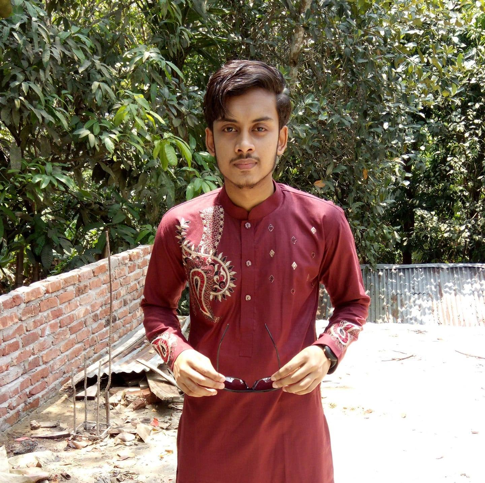

My First Blog
My First Blog,1-Aug-21

Cox’s Bazar
Cox’s Bazar is a town on the southeast coast of Bangladesh. It’s known for its very long, sandy beachfront, stretching from Sea Beach in the north to Kolatoli Beach in the south. Aggameda Khyang monastery is home to bronze statues and centuries-old Buddhist manuscripts. South of town, the tropical rainforest of Himchari National Park has waterfalls and many birds. North, sea turtles breed on nearby Sonadia Island
My Second Blog
My Second Blog,15-Aug-21

Sajek Valley
Sajek Valley is one of the top tourist destinations of Bangladesh. No other place in Bangladesh is available like Sajek. It is the place where green, Scenic beauty of hills, wilderness, playing with cloud will surely fill your mind with joy. For the natural beauty of Sajek valley, it attracts the tourist. Every day thousands of people visit Sajek Valley to enjoy the beauty of nature. To facilitate the tourists, Different Sajek Resorts are made there. Here we have described the tour guide of Sajek Valley.
About Me
Imamul Hoque Sheikh Monir
Popular Post
Follow Me
Imamul Hoque Sheikh Monir